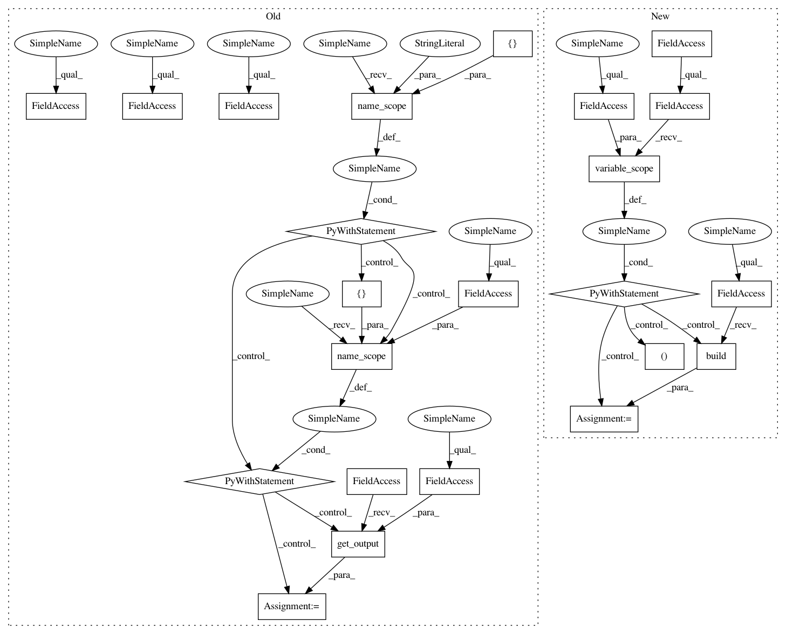

783e415c29c4a4124ea426c824864a32b0f8ee71,src/garage/tf/policies/gaussian_mlp_policy.py,GaussianMLPPolicy,dist_info_sym,#GaussianMLPPolicy#Any#Any#Any#,192
Before Change
return True
def dist_info_sym(self, obs_var, state_info_vars=None, name=None):
with tf.name_scope(name, "dist_info_sym", [obs_var]):
with tf.name_scope(self._mean_network_name, values=[obs_var]):
mean_var = L.get_output(self._l_mean, obs_var)
with tf.name_scope(self._std_network_name, values=[obs_var]):
std_param_var = L.get_output(self._l_std_param, obs_var)
if self.min_std_param is not None:
std_param_var = tf.maximum(std_param_var, self.min_std_param)
if self.std_parametrization == "exp":
log_std_var = std_param_var
elif self.std_parametrization == "softplus":
log_std_var = tf.math.log(
tf.math.log(1. + tf.exp(std_param_var)))
else:
raise NotImplementedError
return dict(mean=mean_var, log_std=log_std_var)
@overrides
def get_action(self, observation):
flat_obs = self.observation_space.flatten(observation)
mean, log_std = [x[0] for x in self._f_dist([flat_obs])]
After Change
def dist_info_sym(self, obs_var, state_info_vars=None, name="default"):
Symbolic graph of the distribution.
with tf.compat.v1.variable_scope(self._variable_scope):
mean_var, log_std_var, _, _ = self.model.build(obs_var, name=name)
return dict(mean=mean_var, log_std=log_std_var)
def get_action(self, observation):
Get action from the policy.
In pattern: SUPERPATTERN
Frequency: 3
Non-data size: 23
Instances
Project Name: rlworkgroup/garage
Commit Name: 783e415c29c4a4124ea426c824864a32b0f8ee71
Time: 2019-09-05
Author: hegde.nishanth@gmail.com
File Name: src/garage/tf/policies/gaussian_mlp_policy.py
Class Name: GaussianMLPPolicy
Method Name: dist_info_sym
Project Name: rlworkgroup/garage
Commit Name: 7d2ec360e1704f9d13e58d97466438db71aa3059
Time: 2019-09-28
Author: zequnyu@usc.edu
File Name: src/garage/tf/regressors/categorical_mlp_regressor.py
Class Name: CategoricalMLPRegressor
Method Name: log_likelihood_sym
Project Name: rlworkgroup/garage
Commit Name: 7d2ec360e1704f9d13e58d97466438db71aa3059
Time: 2019-09-28
Author: zequnyu@usc.edu
File Name: src/garage/tf/regressors/categorical_mlp_regressor.py
Class Name: CategoricalMLPRegressor
Method Name: dist_info_sym